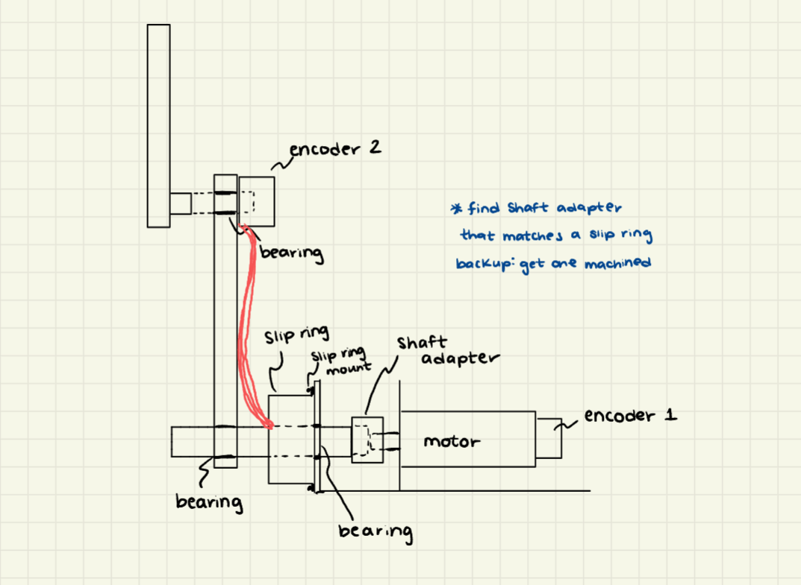
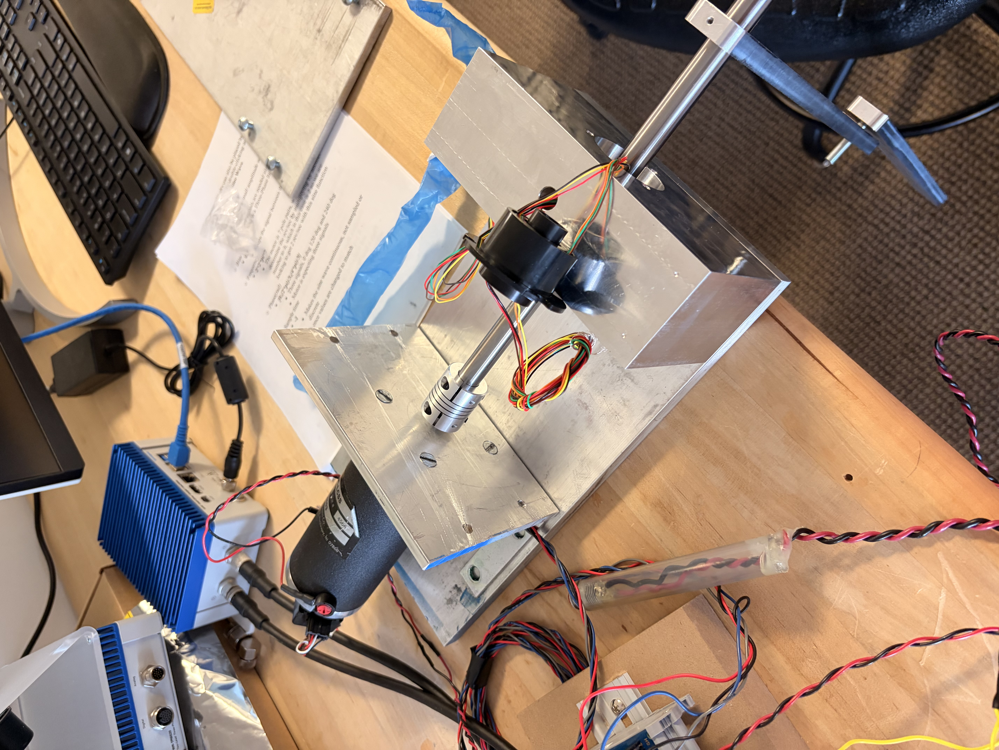

Planar Double Pendulum
Designing and constructing a physical double pendulum testbed to demonstrate a high-gain observer for disturbance estimation.
The research context
The double pendulum is a classic system in nonlinear dynamics. Even small changes in initial conditions produce wildly different trajectories, making it a canonical example of deterministic chaos. That sensitivity is exactly what makes it a useful test mechanism for advanced observer and control algorithms.
At the Virginia Tech Nonlinear Systems Lab, I'm working as an undergraduate research assistant to design and build a physical planar double pendulum that will be used to demonstrate a high-gain observer for disturbance estimation. The goal is to show that the observer can accurately reconstruct unknown disturbances acting on the system from measurable state data alone.
What is a high-gain observer?
An observer is an algorithm that estimates the internal states of a dynamic system using only its inputs and outputs — it reconstructs what you can't directly measure. A high-gain observer does this aggressively: by using large observer gains, it can track fast-changing states and estimate unknown disturbances (forces, torques, or other inputs that aren't explicitly modeled) in real time.
For the double pendulum, this means the observer processes joint angle measurements and estimates things like friction, unknown loads, or other unmodeled forces acting on the system — without a sensor for each disturbance. This has direct applications in robotics, aerospace, and any system where full state knowledge is unavailable or expensive.
My contributions
Designing the physical planar double pendulum structure to minimize friction and unwanted out-of-plane motion while keeping the dynamics clean and measurable.
Fabricating the pendulum assembly, selecting appropriate materials and fasteners, and building the testbed to match the modeled system as closely as possible.
Setting up sensors (encoders) to capture joint angles and feed real-time state data to the observer algorithm. Sensor placement and noise characteristics directly affect observer performance.
Running experiments to compare the observer's disturbance estimates against known applied disturbances, validating that the algorithm performs on the physical system as predicted by simulation.
Photos

.jpeg)
.jpeg)

Why this matters
Most undergraduate engineering projects involve systems that are either linear or only mildly nonlinear. The double pendulum is neither; it's strongly nonlinear and chaotic. Working with it at the research level means reasoning about dynamics that textbook examples rarely cover, and building hardware that exposes you to the gap between simulation and physical reality.
For me specifically, this project connects my fabrication background with the control systems and MATLAB/Simulink skills I've been developing.
Competition report — Vortex 2025–2026
Draft technical report covering design decisions, manufacturing process, and control platforms.
This project is ongoing as of 2026. I'll update this page with results, data, and a full write-up as the work develops. Check back for experimental results and observer performance comparisons.